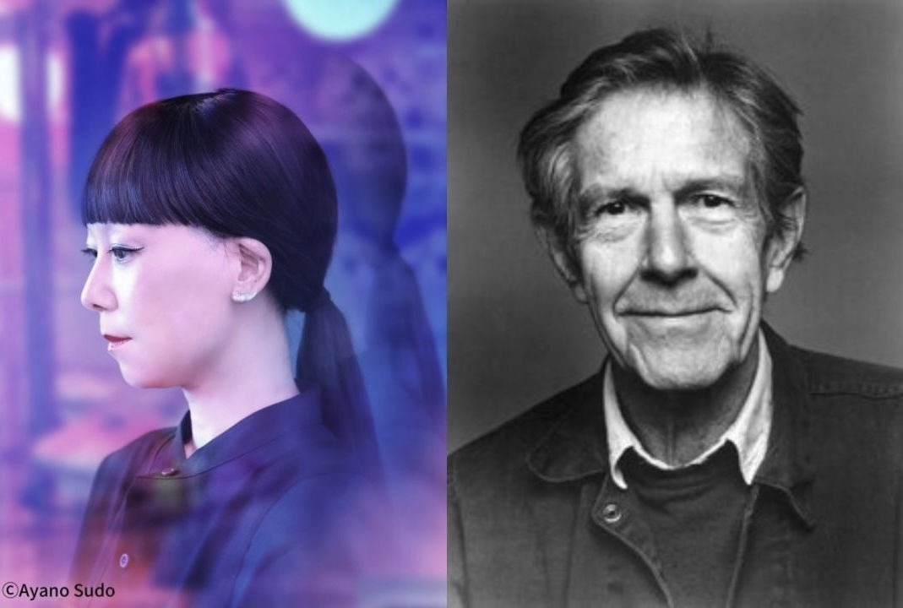

９月に神奈川でコンサートを監修しました。
崇高・偉大に相対する概念としての解放、レディメイド、キッチュ、匿名性、かわいい、 不確定性＿これらのような題材を軸にプログラムはセレクトされた
C×C（シー・バイ・シー）作曲家が作曲家を訪ねる旅 Vol.3
山根明季子×ジョン・ケージ生誕110年、没後30年 ［link］
※14：30よりと山根明季子と沼野雄司（音楽学者）によるプレトークを開催
2022/9/10（土）15:00 開演 神奈川県民ホール 小ホール
料金全席指定 一般￥4,000 学生（24歳以下／枚数限定）￥2,000
問合せ 神奈川県民ホール 045-662-5901
出演
成田達輝（ヴァイオリン） NARITA Tatsuki, Vn
東条慧（ヴィオラ） TOJO Kei, Va
山澤慧（チェロ） YAMAZAWA Kei, Vc
丁仁愛（フルート） JEONG Inae, Fl
田中香織（クラリネット） TANAKA Kaori, Cl
相川瞳（打楽器） AIKAWA Hitomi, Perc
大瀧拓哉（ピアノ） OTAKI Takuya, Pf
佐原洸（エレクトロニクス）SAHARA Ko, Elec
プログラム
ジョン・ケージ：6つのメロディ
ジョン・ケージ：ザ・ビートルズ1962-1970
山根明季子：状態 No.3（新作初演）
山根明季子：キッチュマンダラかわいい
ジョン・ケージ：セブン
山根明季子：カワイイ^_-☆d（委嘱初演）